The murder trial has spawned podcasts, documentaries, thousands of column inches, viral social media posts – and a rapt global audience.
After a week of deliberation, a supreme court jury found Victorian woman Erin Patterson guilty of three counts of murder and one of attempted murder after three guests died and one almost died after eating her homemade beef wellington lunch.
Here’s how newspapers in Australia and around the world responded to Monday’s verdict.
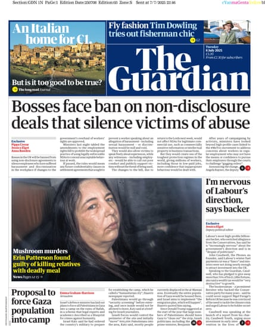The front page of the Guardian.Photograph: The Guardian
In London, the case made the Guardian’s front page as well as two inside pages, where the verdict was reported , alongside details around how Patterson covered up – and repeatedly lied about – the death cap mushroom poisoning of her relatives.
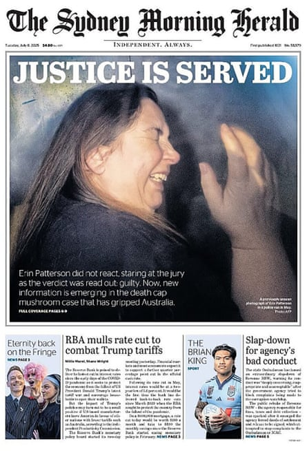How the Sydney Morning Herald covered the guilty verdict.Photograph: The Sydney Morning Herald
The Sydney Morning Herald’s front page was dominated by a photo taken of Patterson recoiling from camera flashes through the window of a police vehicle in May – an image only allowed to be published after a verdict was reached. The paper reported the mother-of-two “ did not react , staring at the jury as the verdict was read out: guilty”.
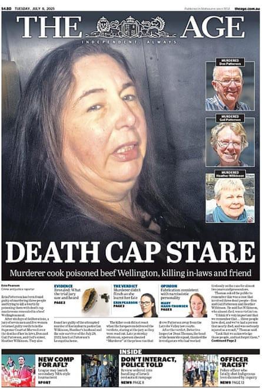The front page of the Age.Photograph: The Age
The Age ran with Patterson’s “death cap stare” and, as with many media outlets, a photo from the same series taken in May. A newly public image of the beef wellington leftovers, a key exhibit in the investigation , also ran on the paper’s front page, along with images of the murder victims, Don and Gail Patterson and Heather Wilkinson.
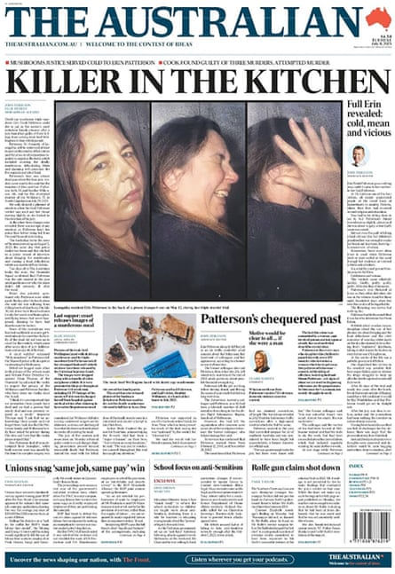The front page of The Australian.Photograph: The Australian
The Australian opted for “killer in the kitchen”. Much of the national broadsheet’s front page was given to its reporting from Morwell , including that Patterson “could die in jail as the nation’s most notorious female prisoner”.
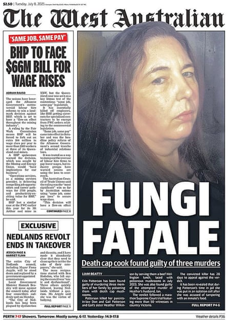The front page of the West Australian.Photograph: The West Australian
“Fungi fatale” led the West Australian’s coverage , alongside an image of Patterson inside the same police vehicle. “Death cap cook found guilty of three murders”, the paper said.
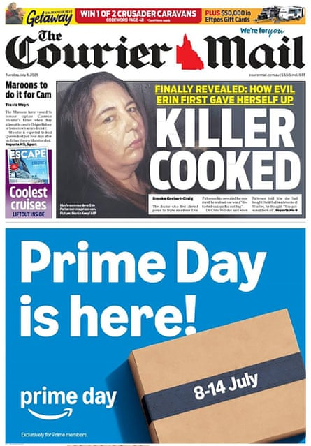The Courier Mail’s front page after the guilty verdict.Photograph: The Courier Mail
To the Courier Mail, the killer is cooked . “Finally revealed: how evil Erin first gave herself up”, stated the Queensland tabloid.
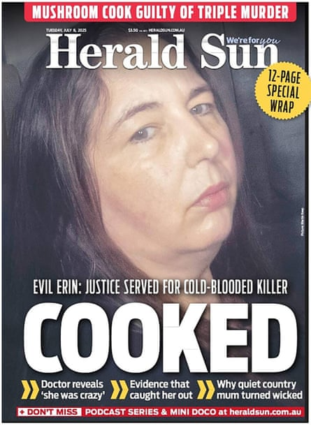The front page of the Herald Sun.Photograph: Herald Sun
The Herald Sun maintained the “cooked” theme as it stated justice was “served for cold-blooded killer”. Inside, alongside its main story , the paper reported on revelations Patterson “was crazy” and why the “quiet country mum turned wicked”.
The front page of the Daily Mail.Photograph: The Daily Mail
The UK’s Daily Mail featured a six-page special focusing on the “definitive inside story” of the “mushroom murderer” – and nudged readers towards its YouTube video and podcast coverage of the trial.
“The verdict ends one of Australia’s most intriguing homicide cases”, the paper’s Melbourne correspondent reported.
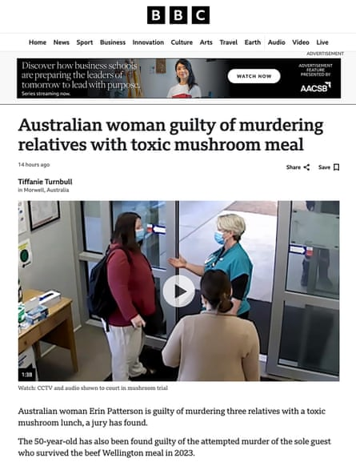How the BBC reported the verdict.Photograph: BBC
Over at the BBC, a raft of online stories around the verdict was led by the headline “Australian woman guilty of murdering relatives with toxic mushroom meal”. A newly released video of Patterson discharging herself from Leongatha hospital – another key piece of evidence seen in court – featured prominently in the report.
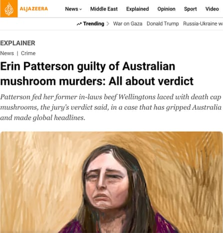How Al Jazeera reported the verdict.Photograph: Al Jazeera
Al Jazeera produced an explainer on the case “that has gripped Australia and made global headlines”. Among its insights was the detail that Patterson can appeal her guilty verdict – and has 28 days from her sentencing date to do so.
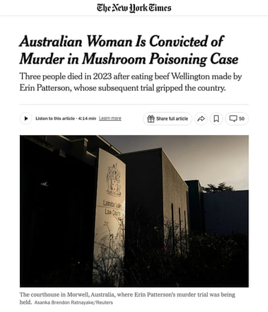How the New York Times reported the guilty verdict.Photograph: The New York Times
In the US, the “mushroom poisoning case” also made headlines at the New York Times, which reported Patterson’s conviction came after a trial that had “gripped” Australia.
“The contrast between the banality of the lunch – a quaint small town in dairy country, the familiar menu item, the seemingly typical mother of two – and its lethal outcome seemed to foment more public fascination with the case than with any other murder trial in recent memory”, reported the Times .
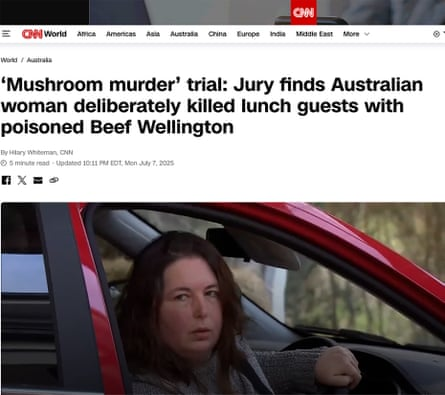How CNN reported the verdict.Photograph: CNN
CNN went with the headline “‘Mushroom murder’ trial: Jury finds Australian woman deliberately killed lunch guests with poisoned Beef Wellington”.